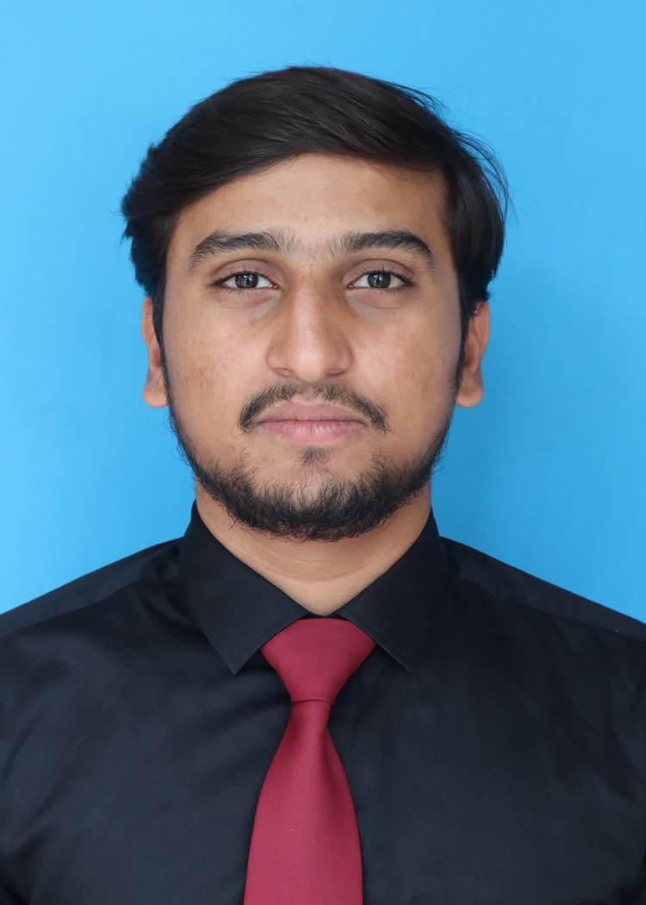

About Me

MADHUSUDAN K S
Contact address
Linkedian
Project experience :
- ONLINE MARRIAGE REGISTRATION SYSTEM [w.r.t DBMS laboratory ] :
Developed an application which helps the government in managing the marriage registration details of couples in online mode. Providing both admin and couples have separate sing in account and this application uses the robust database.
- 3D CAFETERIA [w.r.t CG laboratory] :
Built a 3D cafeteria of our own ATME college cafeteria, it sometimes called a canteen. Here implemented the design and animation of simple 3D cafeteria with using most of the OpenGL functions available with API’s.
- BMI CALCULATOR [w.r.t MAD laboratory] :
An BMI App is being developed to calculate the Body Mass Index[BMI] is a simple calculation using a person’s height and weight. It is developed in Android studio IDE with Java & Xml language is used.
Computer skills :
- Programming : C, C++, Java
- Web development : [HTML, CSS, JavaScript], Frameworks : [Flask, Django], Databases : [MySQL]
- Application packages : [VS Code, Code Blocks], Office Packages :[MS-Word, Excel, PowerPoint]
- Areas of interest : AI & ML, cloud computing
Education details :
MOOC’S :C & C++ for Beginners, Python for Beginners, CSS Tutorials [Certification]
Areas of interest : AI & ML, cloud computing
Personal details :
- Date of Birth : 17/12/2000
- Languages known – English Kannada[mother tung] and other languages with able to understand.
- Hobbies – Sketching & painting ,Traveling and exploring the world.
- Strengths – Disciplined & self motivated, ability to cope up with different situations.
✓ Actively participated in various types technical events and sports activities for inter school.
DECLARATION: The above information given by me is true and correct to the best of my knowledge and belief.